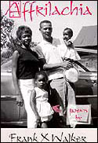

Poems from Affrilachia
Affrilachia is Walker's groundbreaking first collection of poems, now in its fourth printing.
Order Affrilachia from Old Cove Press today.
Affrilachia (2000)
ISBN 0-9675424-0-5 •� $14.50
To order Affrilachia, contact:
Old Cove Press
P.O. Box 22886
Lexington, KY 40522
Tel: 859/266-6374 | Fax: 859/268-5405
Statues of Liberty
mamma scrubbed
rich white porcelain
and hard wood floors
on her hands and knees
hid her pretty face and body
in sack dresses
and aunt jemima scarves
from predators
who assumed
for a few extra dollars
before Christmas
in dark kitchen pantries
they could unwrap her
presentaunt helen, her sister
took in miss emereen’s laundry
every Sunday morning
sent it back
hand washed, air dried,
starched
ironed, folded
and cleaner
than any professional serviceshe waited patiently
for her good white woman
to die
and make good on her promise
to leave her
a little something
only to leave her firstaunt bertha, the eldest
exported her maternal skills
to suburbia
to provide surrogate attention
to children of money and privilege
and spent every other moment
preaching about
the richness of the afterlife
before the undertaker
took her
to see for herselfhousekeepers
washer women
maids
a whole generation
of portable day care centers
traded their days for dimes
allowing other women
the freedom to shop
and sunbathe
the opportunity to school
or workthis curse-swallowing sorority
dodged dicks
and bosses
before postwar women
punched clocks
they birthed civil and human rights
gave the women’s movement
legs
sacrificed their then
to pave the way for a NOW
their hard-earned pennies
sent us off to college
and into the world
our success is their reward
we
are their monuments
but they
are our statues of liberty
Li'l Kings
what if
the good reveren doctah
mlk jr
was just marty
or li’l king
not a pastor
but a little faster
from the streets
quoting gangsta rap
not Gandhiwas not dr. king
but king doctah
or ice-k
his peace sign on a gold tooth
or gleaming 14 karat like
from around his neckwhat if somebody
screaming ‘nigger’
hit ‘im in the head
with a brick
and he pulled out a nine
and squeezed off
one or two rounds
not tearspraying
only that he
not miss
sported mlk
on phat brass knuckles
and a left-handed
diamond pinky ring
walked the streets
with his home boyz
spray painting
let freedom ring
and I had a dream
on bus stops
and stop signsgot arrested for
conspiring to incite riots
disturbing the peace
and resisting arrestdidn’t preach from
no pulpit
but on a microphone
behind turntables
mixin’ and scratchin’
listenin’ to dr. dre
wu tang
and the notorious b.i.g.pants down to his hightops
hat on backwards
eyes on a prized new voice
not no bel
no peace
of nothin’
that just rings
when it’s hit
a voice that
hits backcould he still
be king?